Øv medborgerskabsprøven
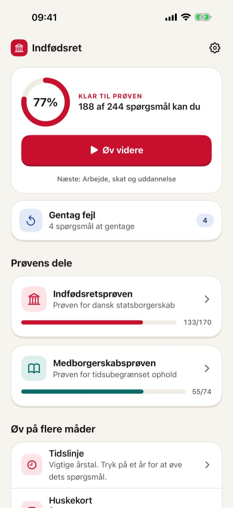
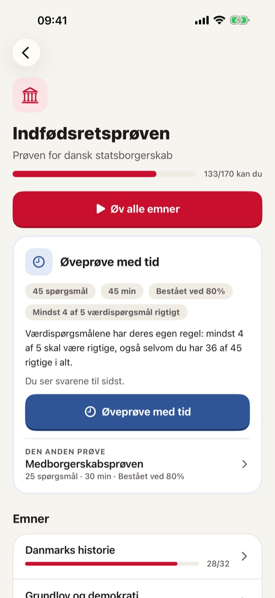
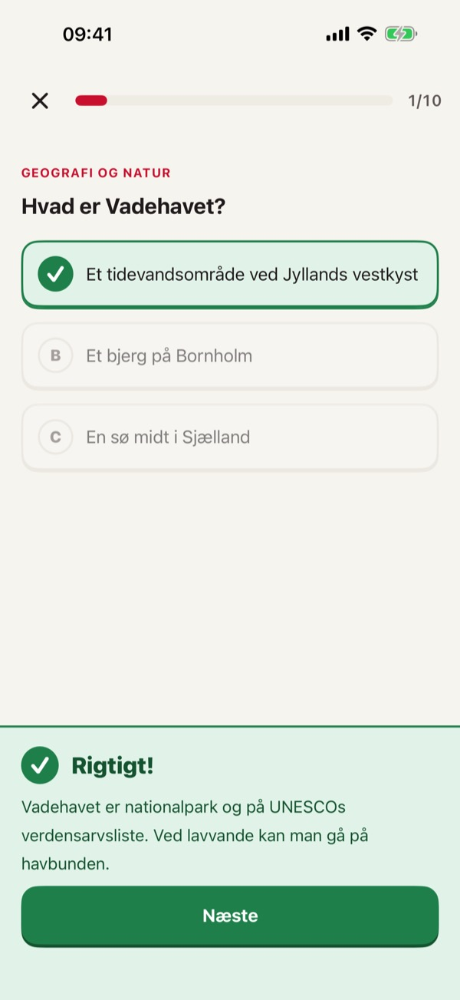
Forbered dig til indfødsretsprøven og medborgerskabsprøven med 244 spørgsmål og forklaringer. Betal én gang, intet abonnement.
Spørgsmålene er på dansk, ligesom til prøven. Efter hvert svar kan du læse forklaringen på dansk, engelsk, tyrkisk eller arabisk.
Prøv ét emne i hver prøve uden køb. Lås op for alt med ét køb. Intet abonnement, ingen reklamer, ingen konto. Appen virker uden internet.
Bemærk: 5 af spørgsmålene til indfødsretsprøven handler om aktuelle begivenheder og kan ikke forberedes. Appens øveprøve bruger i stedet spørgsmål fra pensum.
Appen er uafhængig og ikke tilknyttet SIRI, Uddannelses- og Forskningsministeriet eller staten. Alle spørgsmål er skrevet af os ud fra prøvernes offentlige emner. Øveprøven er træning; den rigtige prøve kan være anderledes.
Privatlivspolitik: https://baytechbv.github.io/privacy/indfodsretsprove-dk/
Brugsvilkår (EULA): https://www.apple.com/legal/internet-services/itunes/dev/stdeula/
Indfødsret & residence test
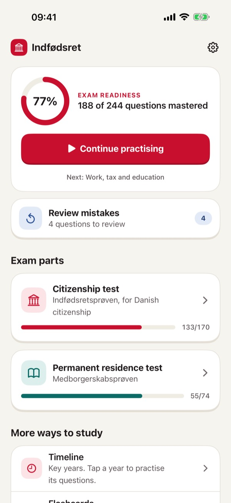
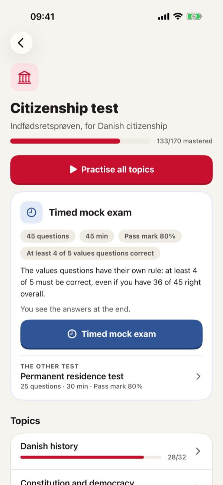
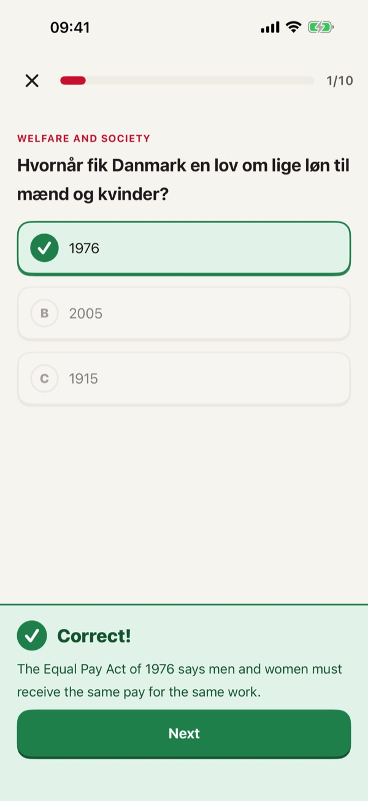
Prepare for the Danish citizenship test (indfødsretsprøven) and the permanent residence test (medborgerskabsprøven) with 244 questions. Pay once, no subscription.
Just like the real tests, every question is in Danish. After each answer you read why it is right or wrong in English (or Danish, German, Polish, Turkish or Arabic), so you learn the language and the facts at the same time.
Try one topic in each test without a purchase. Unlock everything with one purchase. No subscription, no ads, no account. Works offline.
Note: 5 questions in the citizenship test are about current affairs and cannot be prepared. The app's mock exam uses syllabus questions instead.
This app is independent and not affiliated with SIRI, the Ministry of Higher Education and Science or the Danish government. All questions are our own, based on the public test topics. The mock exam is practice; the real test may differ.
Privacy: https://baytechbv.github.io/privacy/indfodsretsprove-dk/
Terms of Use (EULA): https://www.apple.com/legal/internet-services/itunes/dev/stdeula/
Indfødsret i stały pobyt
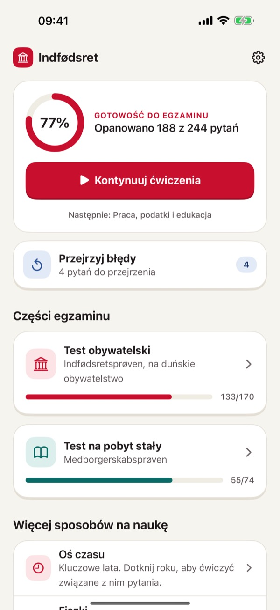
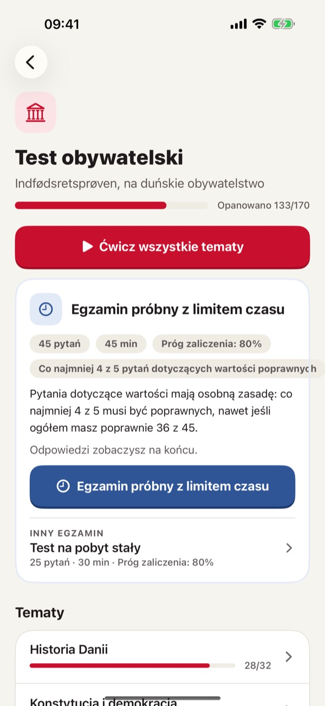
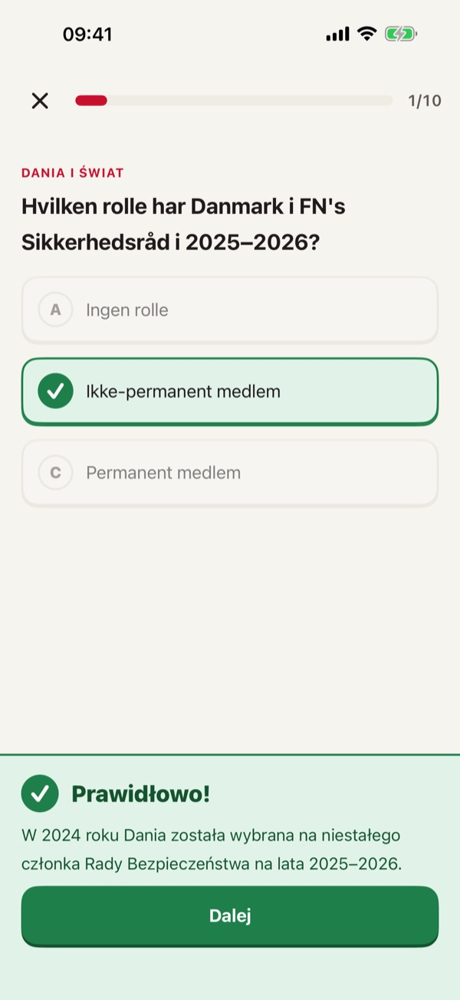
Przygotuj się do duńskiego testu na obywatelstwo (indfødsretsprøven) i testu na stały pobyt (medborgerskabsprøven) z 244 pytaniami. Jedna płatność, bez subskrypcji.
Tak jak na prawdziwym teście, każde pytanie jest po duńsku. Po każdej odpowiedzi czytasz po polsku, dlaczego jest dobra lub zła, więc uczysz się języka i faktów jednocześnie.
Wypróbuj jeden temat z każdego testu bez zakupu. Odblokuj wszystko jednym zakupem. Bez subskrypcji, reklam i konta. Działa offline.
Uwaga: 5 pytań w teście na obywatelstwo dotyczy bieżących wydarzeń i nie da się ich przygotować. Egzamin próbny używa zamiast nich pytań z programu.
Aplikacja jest niezależna i nie jest powiązana z SIRI, ministerstwem ani duńskim rządem. Wszystkie pytania są nasze, oparte na publicznych tematach testu. Egzamin próbny służy do ćwiczeń; prawdziwy test może się różnić.
Prywatność: https://baytechbv.github.io/privacy/indfodsretsprove-dk/
Warunki korzystania (EULA): https://www.apple.com/legal/internet-services/itunes/dev/stdeula/
Indfødsret & Daueraufenthalt
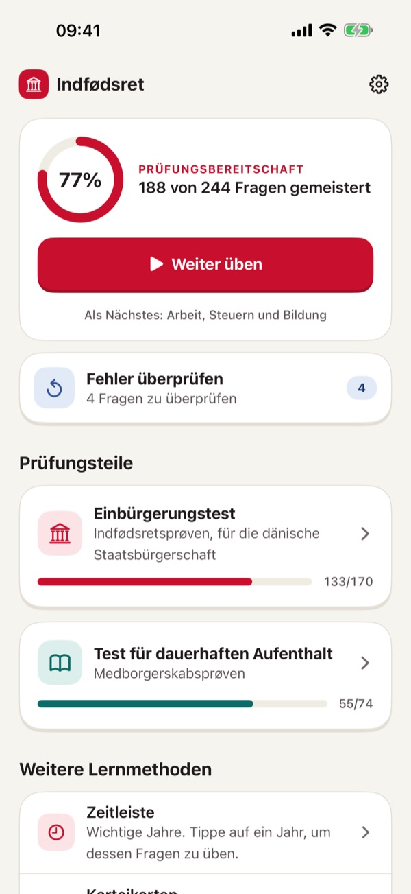
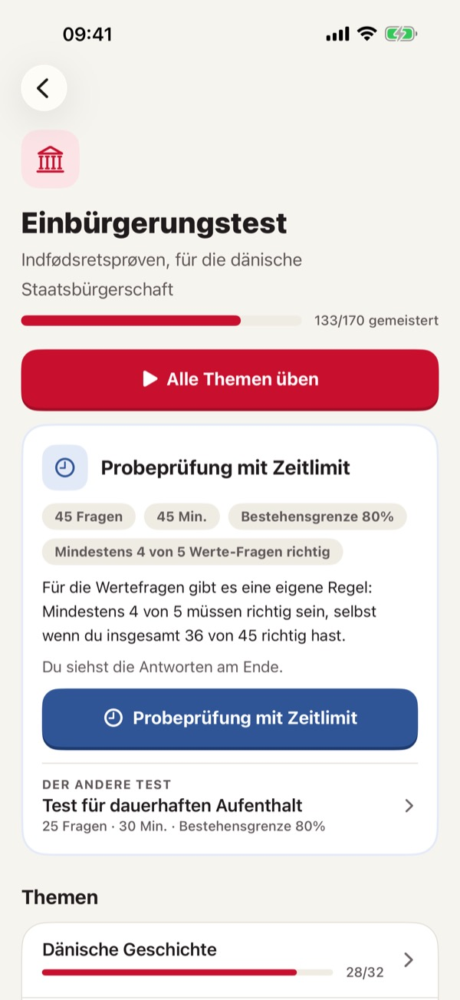
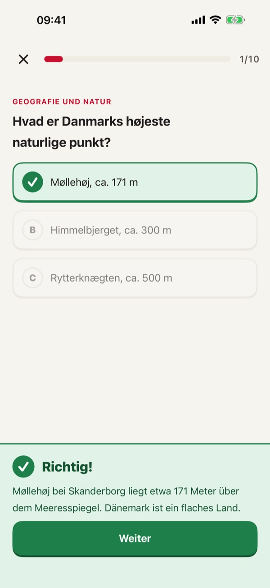
Bereite dich auf den dänischen Einbürgerungstest (indfødsretsprøven) und den Test für den Daueraufenthalt (medborgerskabsprøven) vor – mit 244 Fragen. Einmal zahlen, kein Abo.
Wie im echten Test ist jede Frage auf Dänisch. Nach jeder Antwort liest du auf Deutsch, warum sie richtig oder falsch ist – so lernst du Sprache und Fakten zugleich.
Teste ein Thema pro Prüfung ohne Kauf. Schalte alles mit einem Kauf frei. Kein Abo, keine Werbung, kein Konto. Funktioniert offline.
Hinweis: 5 Fragen im Einbürgerungstest betreffen aktuelle Ereignisse und lassen sich nicht vorbereiten. Die Probeprüfung nutzt stattdessen Fragen aus dem Lernstoff.
Diese App ist unabhängig und steht in keiner Verbindung zu SIRI, dem Ministerium oder der dänischen Regierung. Alle Fragen sind unsere eigenen, basierend auf den öffentlichen Prüfungsthemen. Die Probeprüfung dient der Übung; der echte Test kann abweichen.
Datenschutz: https://baytechbv.github.io/privacy/indfodsretsprove-dk/
Nutzungsbedingungen (EULA): https://www.apple.com/legal/internet-services/itunes/dev/stdeula/
Indfødsret ve oturum sınavı
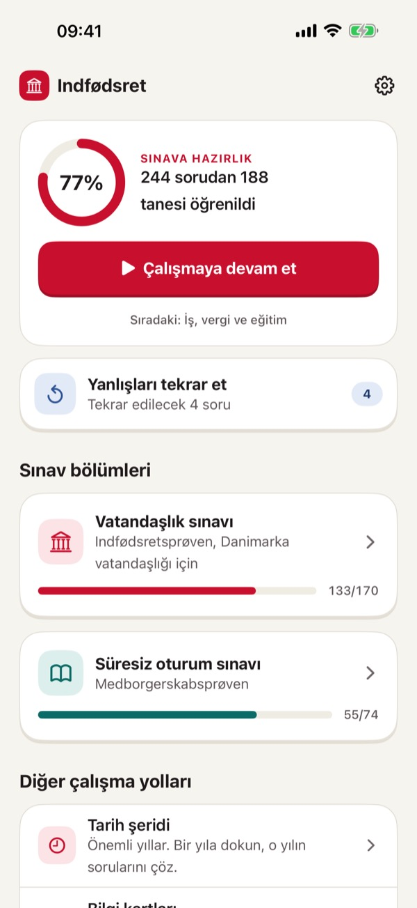
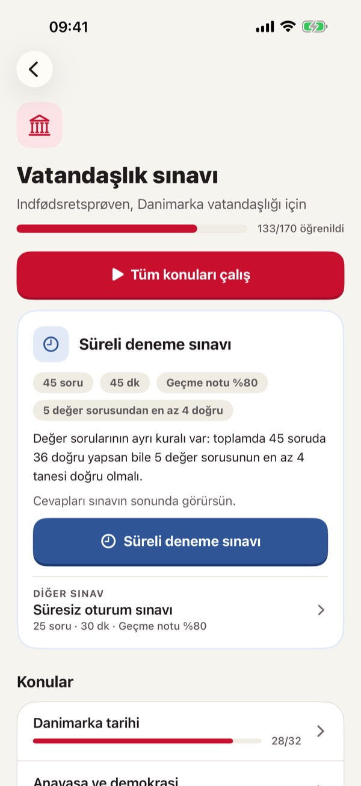
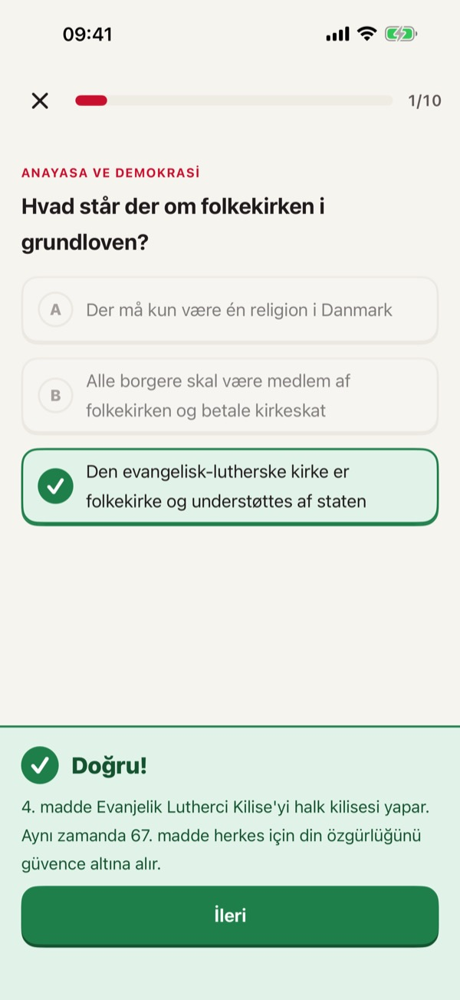
Danimarka vatandaşlık sınavına (indfødsretsprøven) ve süresiz oturum sınavına (medborgerskabsprøven) 244 soruyla hazırlan. Tek seferlik ödeme, abonelik yok.
Gerçek sınavdaki gibi tüm sorular Dancadır. Her cevaptan sonra neden doğru ya da yanlış olduğunu Türkçe okursun (istersen Danca, İngilizce veya Arapça). Böylece hem dili hem bilgileri aynı anda öğrenirsin.
Her sınavda bir konuyu satın almadan dene. Tek bir satın alımla her şeyi aç. Abonelik yok, reklam yok, hesap yok. İnternetsiz çalışır.
Not: Vatandaşlık sınavındaki 5 soru güncel olaylarla ilgilidir ve önceden çalışılamaz. Uygulamanın deneme sınavında bunların yerine müfredat soruları vardır.
Bu uygulama bağımsızdır; SIRI, Danimarka Yükseköğretim ve Bilim Bakanlığı veya Danimarka devleti ile bağlantısı yoktur. Tüm sorular, herkese açık sınav konularına göre tarafımızdan yazılmıştır. Deneme sınavı alıştırma amaçlıdır; gerçek sınav farklı olabilir.
Gizlilik: https://baytechbv.github.io/privacy/indfodsretsprove-dk/
Kullanım Koşulları (EULA): https://www.apple.com/legal/internet-services/itunes/dev/stdeula/
Indfødsretsprøven والإقامة
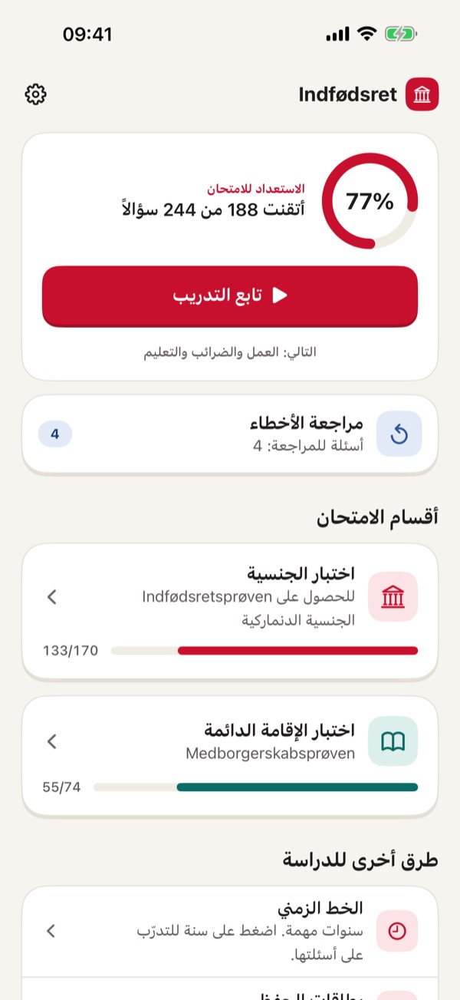
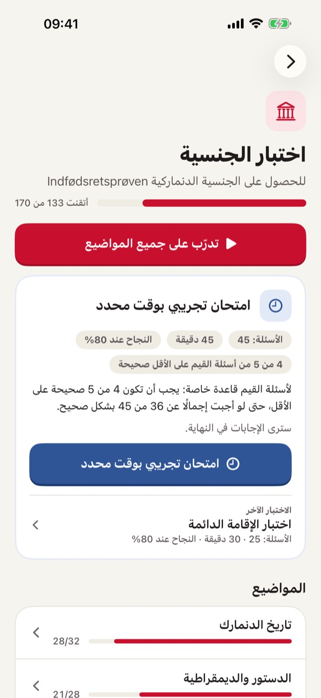
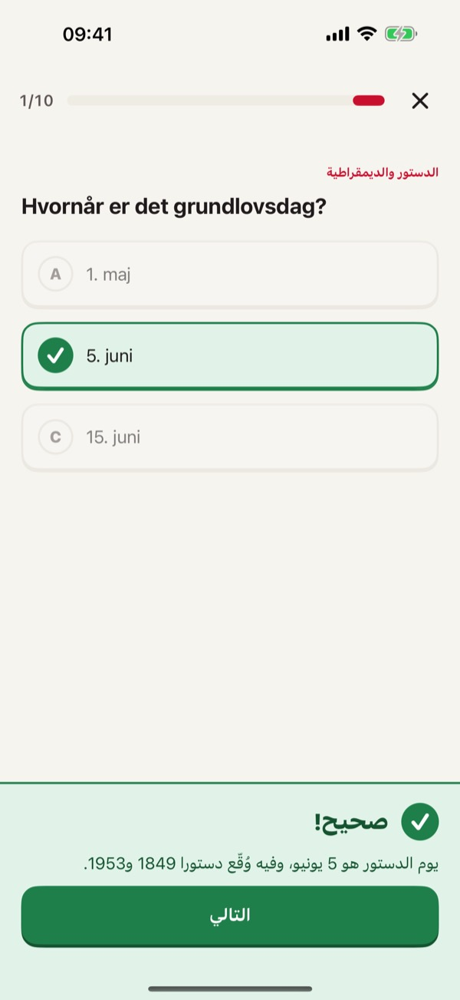
استعد لاختبار الجنسية الدنماركية (indfødsretsprøven) واختبار الإقامة الدائمة (medborgerskabsprøven) مع 244 سؤالًا. دفعة واحدة فقط، بلا اشتراك.
الأسئلة بالدنماركية والشرح بالعربية
كما في الاختبار الحقيقي، جميع الأسئلة باللغة الدنماركية. بعد كل إجابة تقرأ سبب صحتها أو خطئها بالعربية (أو بالدنماركية أو الإنجليزية أو التركية). الواجهة العربية كاملة من اليمين إلى اليسار.
ماذا يتضمن التطبيق
• اختبار الجنسية: 148 سؤالًا عن تاريخ الدنمارك والدستور والديمقراطية والرفاه والمجتمع والثقافة والتقاليد والجغرافيا والدنمارك في العالم
• اختبار الجنسية: 22 سؤالًا عن القيم الدنماركية
• اختبار الإقامة: 74 سؤالًا عن الحياة اليومية والديمقراطية والحقوق والواجبات والعمل والضرائب والتعليم
• امتحانات تجريبية بوقت محدد بالصيغة الرسمية: 45 سؤالًا في 45 دقيقة (النجاح بـ36 إجابة صحيحة و4 على الأقل من أسئلة القيم الخمسة) و25 سؤالًا في 30 دقيقة (النجاح بـ20 إجابة صحيحة)
• تعود إليك أخطاؤك حتى تجيب عنها صحيحًا مرتين متتاليتين
• تقدّمك في كل موضوع
سعر عادل
جرّب موضوعًا واحدًا في كل اختبار دون شراء. افتح كل شيء بعملية شراء واحدة. بلا اشتراك، بلا إعلانات، بلا حساب. يعمل دون إنترنت.
ملاحظة: 5 أسئلة في اختبار الجنسية عن أحداث جارية ولا يمكن التحضير لها، لذلك يستخدم الامتحان التجريبي في التطبيق أسئلة من المنهج بدلًا منها.
هذا التطبيق مستقل وغير تابع لـ SIRI أو لوزارة التعليم العالي والعلوم أو للحكومة الدنماركية. جميع الأسئلة من تأليفنا استنادًا إلى مواضيع الاختبار المعلنة. الامتحان التجريبي للتدريب فقط، وقد يختلف الاختبار الحقيقي.
الخصوصية: https://baytechbv.github.io/privacy/indfodsretsprove-dk/
شروط الاستخدام (EULA): https://www.apple.com/legal/internet-services/itunes/dev/stdeula/